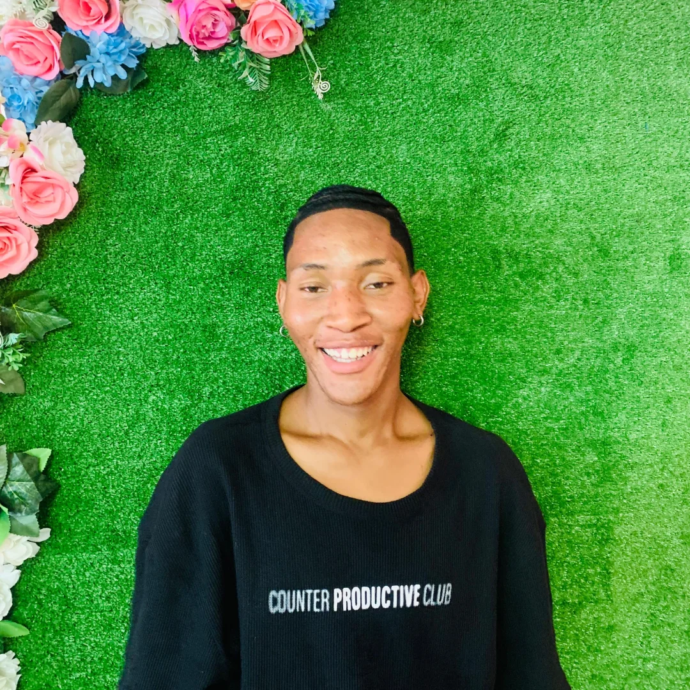

Meet the Editor

Editor-in-Chief & Multimedia Creator
I am a passionate journalist and multimedia creator, dedicated to telling stories that inspire and inform youth across Lesotho and beyond. This magazine focuses on lifestyle, culture, technology, and entertainment, combining articles, photos, videos, and podcasts to share engaging content.
Skills: Writing, Video Editing, Podcast Production, Photography